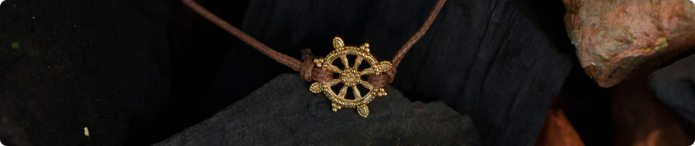

Невероятная история Натальи, которая из бедной женщины превратилась в успешную и богатую предпринимательницу, покорила всю Россию
Шокирующая история Натальи без цензуры только у нас на сайте:
Если бы вы только знали, из какого болота я выбралась… Все началось
2 года назад с мужчины, который кормил меня обещаниями и обещал золотые горы. На тот момент он меня
покорил своей страстной влюбленностью, решительностью и красивыми речами. Отношения развивались
стремительно. И все было как в сказке. Но только пару месяцев после свадьбы. А потом…
Сначала он уговорил меня взять на себя кредит на машину, мотивируя тем, что будут дети,
будем
путешествовать. Я согласилась, хотя раньше никогда кредитов не брала. Потом он якобы узнал про
какую-то акцию или низкую ставку и попытался убедить меня, что будет выгодно взять большой кредит,
выплачивать предыдущий и еще экономить при этом 5000 в месяц. Ему в кредите отказали, поэтому снова
предложил взять
на меня. Я не согласилась, но он, зная мой пароль от Сбербанка, взял этот кредит,
использовав пароль и мой телефон, пока я была в ванной. Я была
в шоке.
Позднее я узнала, что партнер ежедневно делал ставки на спорт. Он стал нервным и
агрессивным. Из дома пропало золото. Стали поступать звонки от коллекторов из микрозаймов. Начался
шквал звонков, писем, даже угроз. Ведь он указывал везде адрес. И все знали, что Наталья — его жена.
Но и это было еще не самое ужасное. В один момент он внезапно просто исчез.
Я осталась одна, с пустотой в душе и огромной дырой в банковском счете. Я потеряла все: машину,
взятую в кредит, квартиру, друзей. Не в состоянии справиться с этой ситуацией, я оказалась на улице.
Друзья отвернулись, мне даже негде было ночевать.
Я была скептически настроена и, честно, совсем не планировала его покупать. Таня
мне сказала, что сама тоже в начале не верила в силу амулета. Носила его скорее для красоты, но уже
меньше, чем месяц ее жизнь стала меняться в лучшую сторону, решился вопрос с долгами
и появилась внутренняя энергия и опора. После первых изменений Таня начала верить в действие
амулета, скептицизм растворился и тогда все пошло еще быстрее. Появилось свое дело, отношения и вот
она живет свою лучшую жизнь.
Я человек сама по себе достаточно скептически настроенный на все такие эзотерические истории, потому
думала, что ей просто повезло, списывала на удачу. Но Таня сама мне предложила необходимую сумму на
амулет, чтобы и я могла изменить свою жизнь и перестать страдать. Терять мне было нечего и я
согласилась.
В это сложно поверить, но уже через две недели как я активировала амулет, я нашла новую работу и начала восстанавливать свою жизнь с нуля. Сначала друг Тани предложил объединиться с ним и открыть бизнес в сфере онлайн-образования, вложив первоначальный капитал. Тогда мой скептицизм начал уходить, я всерьез задумалась о том, что именно амулет внушал мне веру в себя и притягивал благополучие, и я рискнула, поверила и в амулет и в то, что моя жизнь может стать такой, о которой я мечтала. И понеслось…
Вместе с другом Тани мы создали Академию удаленных профессий, привлекли первых студентов. Я стала активно развиваться в этом направлении и уже через полгода встала на ноги. А в этом году вошла в топ-5 самых успешных женщин-предпринимательниц в этой сфере. Сейчас я могу себе позволить не работать, в жить в свое удовольствие. И еще я встретила мужчину, который успешен в своем бизнесе, он меня поддерживает во всем и я переезжаю к нему в Австралию.
Одно из преимуществ амулета заключается в его защитных свойствах. Веря в
его силу, я чувствовала себя защищенной от негативного влияния окружающего мира. Это помогло
мне мне стать увереннее и в личной жизни, и в работе.
Считаю, что в этом секрет моей счастливой жизни. И чувствую, что должна делиться своим опытом и вдохновлять других женщин на путь к изменениям с помощью буддийского амулета.
“История Натальи — это история о том, что независимо от жизненных испытаний, всегда есть надежда на лучшее. Каждый из нас может изменить свою судьбу и обрести счастье. Каждый заслуживает право быть счастливым. Монахи верят в это всем сердцем. И помогают достичь полной реализации во всех сферах жизни, использовав силу амулета «Дхармачакра».”
подробнее об амулетеВот как говорит Наталья о свойствах амулета:
Невероятная история Натальи, которая из бедной женщины превратилась в успешную и богатую предпринимательницу, покорила всю Россию«Знаете,я не могу даже передать словами эти чувства! По моим данным, монахи составили карту моего жизненного пути и активировали все спицы колеса, чтобы я могла достичь полной реализации. Вместе с амулетом от монахов пришла запись специальной мантры для сонастройки амулета со мной. Сразу после пропевания мантры вместе с монахом я ощутила во всем теле такие мощные вибрации, что мне казалось, я способна горы свернуть. Собственно, так и получилось в результате! Где я была несколько лет назад? На улице. Без денег, без друзей, без любви, даже без жилья. И где я сейчас! Я настолько благодарна монахам, что не удержалась и поехала в Таиланд, чтобы поблагодарить их лично! Я всем своим коллегам и друзьям всегда рассказываю про чудо-амулет. Мой друг, с которым я начинала бизнес, уже благодаря ему женился. Сначала я не хотела про него рассказывать в СМИ, так как боялась, что мне не поверят, но потом я поняла, что если моя история вдохновит и изменит судьбу хоть одной женщины, все это не зря».
Амулетов Дхармачакра много, но есть и подделки. Наталье помог именно этот амулет: подробнее об амулете Мнение экстрасенса
В чем секрет тайских амулетов? Мы решили взять комментарий у экстрасенса, чтобы узнать, действительно ли они помогают.Александр Шепс
«В эзотерическом мире существует множество амулетов, но Дхармачакра это сильнейший духовный символ, который меняет судьбы. Я не удивлен, что он так подействовал и послушав историю Наталью, я согласен, что такие изменения могли случиться благодаря амулету Дхармачакра. Ни у кого больше нет такой чистой и светлой энергии, как у тайских монахов. Помимо этого, монахи задействуют и тибетскую астрологию, активируя амулет точно под индивидуальный запрос человека. Поэтому да. Такие перемены у владельцев амулетов очень даже могут происходить.
Амулет «Дхармачакра» привозят в Россию только из одного места.Вот проверенный сайт: подробнее об амулете